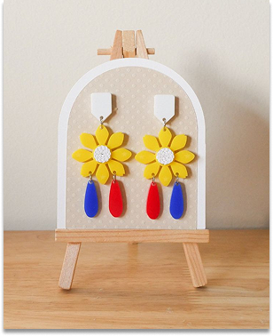

800.00

"Filipino Flag Inspired ear piercing"
Description
Filipino ear piercing designs blend indigenous, colonial, and modern influences, featuring elements like tribal engravings, gold hoops, and pearl studs. Traditional styles often showcase nature-inspired patterns or materials like wood, shells, and beads, reflecting the country's rich cultural heritage. Contemporary designs incorporate Baybayin script, sun-and-stars motifs, and minimalist wave or fan shapes, symbolizing Filipino identity and artistry.
Materials
14¼×21¼in. - 37.5×54.9cm
Watercolour on 140lb/300gsm paper
Artist
JUAN DELA CRUZ